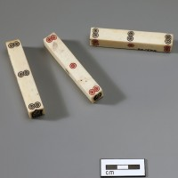
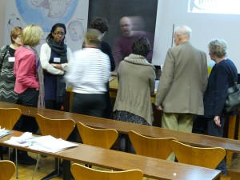

“How on earth would you get that over your foot?”
“It looks like it’s been made from plumber’s piping.”
“Are these the ones that make a noise when you walk?”
“Which way up do you think you would wear that?”
“No one in Cambridge would get those on – all those calves ruined by cycling”
Daljit and I are in the Museum anthropology stores, wearing our purple object-handling gloves and looking through boxes labelled: ‘India. Personal Adornment: Foot and leg’. Mark (the curator) patiently answers our questions, explaining what things are, who collected them and where. Daljit carefully writes details into his notebook while Mark measures and photographs the objects. I open little tissue paper parcels and stare in wonder at the wealth of our collections. I’ve always known that we have a lot of stuff, but more recently I haven’t had the chance to get my hands on objects. What a treat this has been. Four small boxes chosen from our vast store. Daljit continues on his day, meeting researchers and collections staff, picking brains, finding stories, soaking up the Museum.
I return to my office, to the constant deluge of emails.
But I keep my purple gloves beside my keyboard. Just in case I get the chance to go back to the stores…
Image: toe ring (late 19th/early 20th) made of white metal. The chain connects rings worn on the big toe and little toe. Part of a group collected in Delhi by Captain Henry R Lawrence and given to the Museum in 1909.
Sarah-Jane Harknett, Museum of Archaeology and Anthropology
After their first scheduled visit had to be cancelled due to icy weather conditions, I was delighted to finally welcome students from Neale-Wade Community College to the Whipple Museum.
During an introductory tour, we considered the relationships between the beauty of an object and other aspects like purpose or utility. The more a scientific instrument is used, the greater the chances of it getting broken, lost and even, eventually, thrown away. Those instruments that survive intact to end up in a museum are more likely to have been intended as display pieces from the start – and so designed for form as much as function.
Next, Don Paterson offered the students some inside tips on poetry and writing. Following advice from Don on how to be sensitive to your environment and ‘let your object find you’, the students explored the Whipple with purpose. The galleries were almost silent, but filled with concentration.
After lunch, the students reported back on the objects they planned to write about. From a wax embryo to an astrolabe, glass models of fungi to faulty protractors, their choices ranged over the variety of objects in our collections.
Working with such enthusiastic and thoughtful students is a pleasure. I look forward to seeing their finished poems.
Vashka dos Remedios
Whipple Museum of the History of Science
Image: Glass model of Bremia lactucae (C) the Whipple Museum (Wh.5826.24)

In his poem Museum, Louis MacNeice writes about visiting a museum to keep warm. I like the implied premise of this: sunny day head for the beach and ice cream, cold day head for a museum and nose up to skeletons!
As it’s January and snowing I’m more than happy to head for the MAA. I have been lucky to meet Mark Elliot who is an Asia specialist and he has been showing me old Asian weapons used against colonisers. I have put on my purple latex gloves and had a jolly good time feeling the maces, spears, axes and bows. In my research on the Indian epic, Ramayana, I have wondered about the decoration, weight and general feel of the weapons and this research has been really helpful.
Another of my current research interests is the other great Indian epic, Mahabharata. In this text a scene hinges on a game of dice. I assumed the dice would be the standard six-sided cubes but Mark thinks that this might not be the case. To prove his point, he takes me to a store room and pulls out from a box a four-sided stick dice, known as a log dice. This is an older form of dice and may have been used in the Indian epic. I am very excited that my concept of an object which seemed definitive should be so easily challenged by an old object that happens to be tucked in a box in a museum store room.
Now back, to thinking about my commission poem…perhaps something about dressing up as a native, playing a game of log dice then impaling a sahib before heading home for the warmth…
Daljit Nagra
(Image:Set of log dice from India. Collected by F.O. Lechmere-Oertel. Museum of Archaeology & Anthropology, 1930.1509)

Two days in Narnia, the snow inches thick, highlighting the silhouettes of Henslow’s trees against the January sky. We crunched our way round sometimes misremembered paths to discover flowers hidden in the brilliant white of it. The Winter Garden colours still shine through, a poetry of Mahonia, Winter Sun, Silver Queen, Red Sentinel. Futher on, The Persian Ironwood has a mass of blood red stamens and when the snow lifts I am told it will blush in such a way we’ll see it from a distance. This is the tree that speaks to me. Every time I think I’m ready to go home, I circle the systemic beds to stand underneath its tangle of dappled branches, all the colours of the Persian snakes.
Gardeners and Botanists seem to me a special people, not hoarders but generous to a fault. They plant trees for future generations, hold in their imagination what their skill and patience will become. I watched a meadow sown in sand and snow. Whilst putting up the fence they tell me how it’s done, wearing their knowledge lightly but with passion.
This was always going to be extraordinary, even without the gift of snow.
Ann Gray
What do you do with a collection of creative writers who have ventured into the wilds of Cambridge? Totally immerse them in Polar science and culture of course!
On Wednesday 23rd January, Jo Shapcott brought a group of her creative writing students and colleagues from Royal Holloway up to the Scott Polar Research Institute in Cambridge for a day of intensive polar studies. They were joined by museum staff, academics and researchers attached to the Polar Museum as well as some of our wonderful volunteers.
Starting with an introduction from the Director, Julian Dowdeswell, we were whisked through a suitably icy schedule of research talks on glaciology, reindeer herding, Arctic phantoms, colours of ice, pony shoes, polar sea beds and hand drawn maps.

Pausing briefly for refreshments, they were bombarded by a series of practical experiments involving a lot of ice and some slime!
A tour behind the scenes at the Institute, its library, archives and museum stores followed.
Naturally, the day would not have been complete without at least one writer donning the full polar gear!
It is hoped that the writers and staff will respond to the day with some suitably chilly prose and poetry…
« Newer posts Older posts »